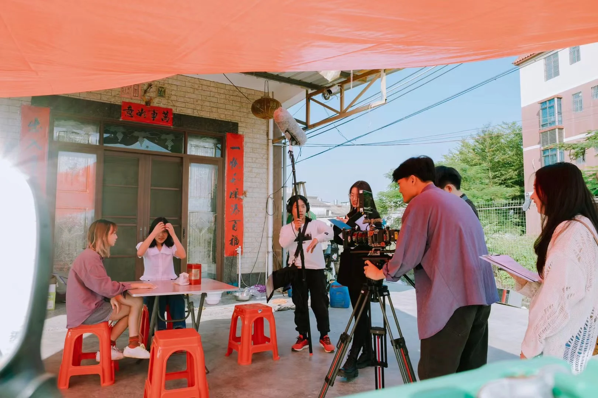

AGAIN
Creative practice · Co-creator
Filmmaker. Educator. Researcher.
Documentary practice, visual storytelling and media research.
University teaching · 2020–2025Hubei Business College
Doctoral researchUniversiti Sains Malaysia
Creative practice & student supervision
Creative practice · Co-creator
Student feature · Co-supervising producer
FIRST FRAME Special Mention · 2022
Student graduation film
Co-adviser / Co-supervising producer
Student graduation film
Co-supervising producer
Student project · Project adviser
National Final First Prize · 2023
Student advertising project · Project adviser
National Final Third Prize · 2022
Teaching & mentorship

Project-based teaching, from story research to production, editing and reflection.
Documentary, gender and cultural representation.
Ethical representation connects my research, film practice and teaching.
2025
2023
Journal of Law and Sustainable Development